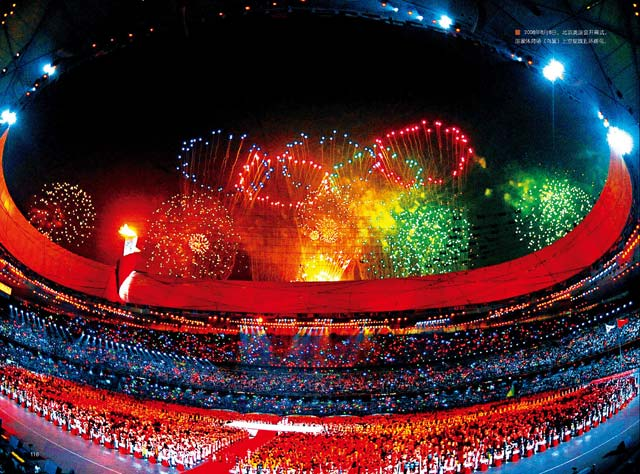

北京怀柔明长城风景图。摄影/常克永

北京紫禁城鸟瞰风景图。中华文明曾有过至少1500年领先世界的历史，足以构成今天中国梦的底蕴和愿景。

2008年8月8日，北京奥运会开幕式，国家体育场（鸟巢）上空绽放五环烟花。
中国梦——文明复兴的情愫
环顾五洲四海，世界上每个人都有自己的梦想——幸福梦、爱情梦；古往今来，每个民族也都有自己的梦——富足梦，强国梦。在世界历史上，梦想，无论是苦难、屠杀，还是战争、强权都不能剥夺上天赋予人类的这一“特权”。
当今世界，梦想千姿百态、奇幻瑰丽。概括起来，影响着我们这个时代寻求文明愿景和理想的梦有三大参照体系，那就是美国梦、欧洲梦和中国梦。
对于每一个人，梦就是一种希望，就是一种向往，一种理想，一种对未来的期冀；对于一个民族，它则是凝聚的共识，奋斗的目标，行进的方向，和为着实现那一梦想而生发出来的全民族的热情、动力、牺牲和担当。